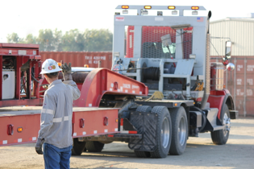

<div class="container">
  <div class="row">
    <div class="inside-column col-xs-12 col-lg-4">
      
    </div>
    <div class="inside-column col-xs-12 col-lg-8">
      <h3 class="welcome">About</h3>
      <p>
        SOS Crane was founded in July 1989 in Signal Hill California by Steve and
        Kim Whaley primarily to service the oilfield industry in Southern
        California. The business was expanded in 1995 with the addition of a yard
        facility in Bakersfield. Further growth of the Company has resulted in a
        new Company headquarters and 20-acre yard facility with rail access and
        pipe storage yard on Enos Lane in Bakersfield.
      </p>
      <p>
        The pride of the company is our fleet of over 35 trucks consisting of 19
        Ton Cranes, Winch Trucks and Straight Truck. Our diverse fleet makes
        SOS the ideal choice for many service needs across the oilfield
        industry. With 24 hr dispatch 7 days a week, SOS is always available
        to meet the needs of our customers and ensure logistical efficiency
        is delivered.
      </p>
      <p>
        We dontate to multiple charities such as Challenge Athlete Fund, MSD
        Foundation, WBNEC, Signal Hill Chamber of Commerce, Active in multiple
        local youth sports activites.
      </p>
      <a class="work-with-you" href="/jobs">We would love to work with you →</a>
    </div>
  </div>
</div>
